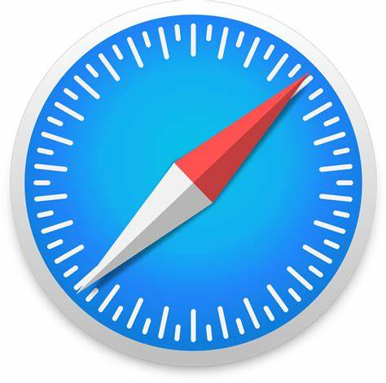
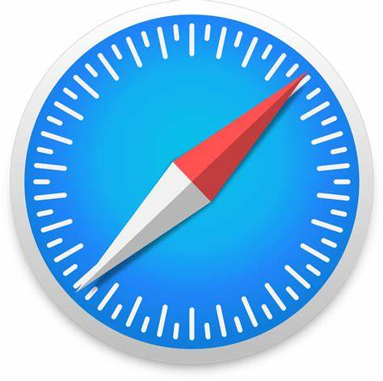

Most Popular Browsers
Google Chrome
Google Chrome is a web browser developed by Google, released in 2008. Chrome is the world's most popular web browser today!
Mozilla Firefox
Mozilla Firefox is an open-source web browser developed by Mozilla. Firefox has been the second most popular web browser since January, 2018.
safari
Safari web browser is the default for the iPhone, iPad, and macOS, first released by Apple in 2003 and briefly offered on Windows from 2007 to 2012. The popularity of the Safari browser exploded with the iPhone and the iPad.
opera
Opera is a web [browser] developed by the company Opera Software. It is compatible with Microsoft Windows and Mac OS X operating systems mainly. Although it also works, in older versions, on Linux. It launched in 1995.

 
